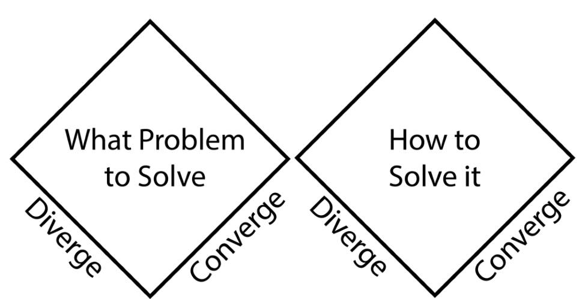
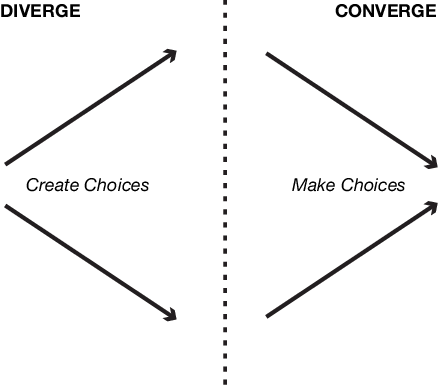
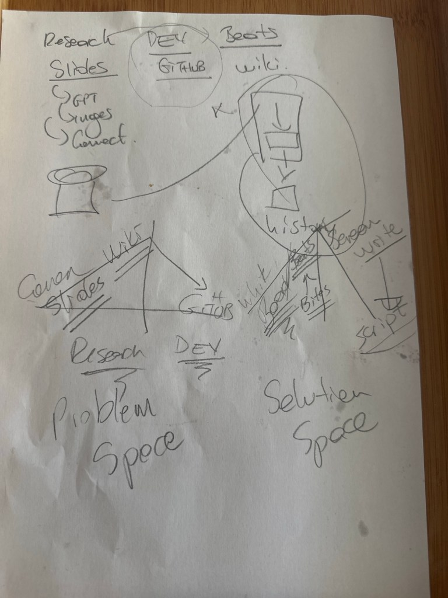
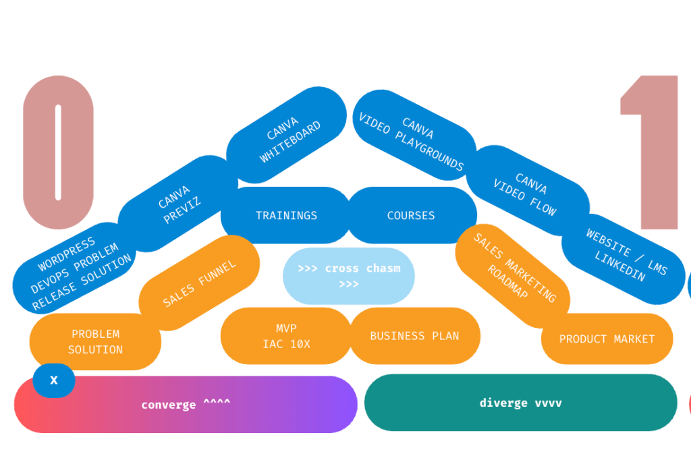
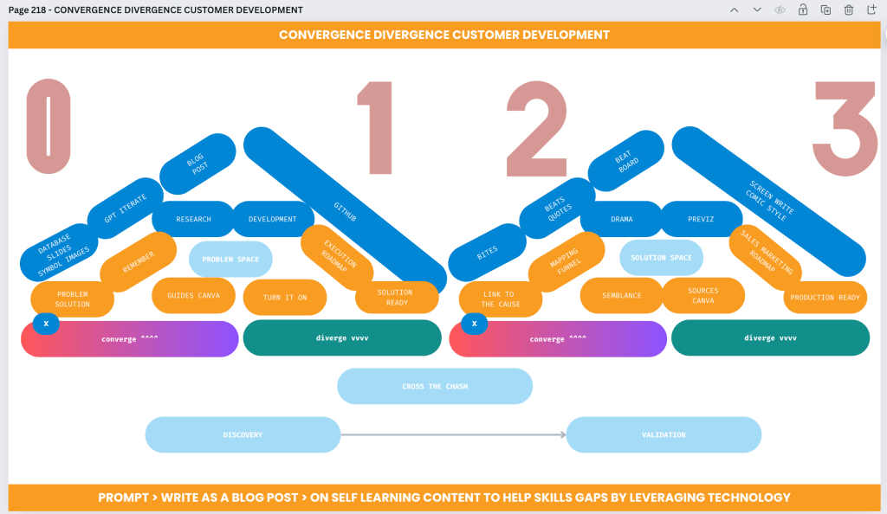

Converging and Diverging in Problem and Solution Spaces for Video Production in self learning content



🎬 In the process of video production, effectively navigating through the problem space and solution space is 🔑 for creating a successful final product. The concepts of convergence and divergence are central to this navigation, allowing teams to explore a wide range of ideas before refining them into a cohesive solution. Let's explore how these concepts apply specifically to video production! 🎥
Understanding the Problem Space 🧠
The problem space in video production is the initial stage where the team identifies and defines the challenges, objectives, and constraints of the project. This stage is crucial as it sets the foundation for the entire production process. Here, divergence is key! 🌟 Divergence involves expanding the scope of possibilities and exploring various creative directions. The goal is to generate a wide array of ideas without immediate judgment or filtering.
For example, if the video project aims to promote a new training, the team might brainstorm different storylines, target audiences, and platforms. They might explore different genres, from documentaries to animations, and varying tones, from serious to humorous. 🎭 Diverging in the problem space ensures that no potential solution is overlooked and that the team fully grasps the scope of the challenge.
Tools Used : Slides,GPT,Google Images, WordPress
Converging and Diverging in the Problem Space 🎯
After diverging, the next step is convergence. Convergence in the problem space involves narrowing down the broad set of ideas generated during the divergence phase. This is where the team begins to critically evaluate the ideas, considering factors like feasibility, alignment with project goals, budget constraints, and audience preferences.
In video production, this might involve selecting the most promising storyline, deciding on the key message, and choosing a visual style that best represents the brand. 🎨 The convergence process in the problem space results in a clearer, more focused direction for the project, setting the stage for the next phase of production.
Tools Used : Github
Exploring the Solution Space with Convergence and Divergence 🚀
Once the problem space has been defined and narrowed down, the team enters the solution space. Here, the goal is to develop and refine the selected ideas into a tangible product. Just like in the problem space, the solution space requires both divergence and convergence.
During the divergence phase in the solution space, the team explores different ways to bring the chosen concept to life. This might include experimenting with various filming techniques, editing styles, music choices, and special effects. 🎶 The focus is on creativity and experimentation, trying out different approaches to see what works best.
Tools Used : Whiteboard,Kanban(Beats)
Converging in the Solution Space 🎥
Finally, after exploring various options in the solution space, the team must converge once more to finalize the product. This phase involves making critical decisions on the final cut of the video, ensuring that all elements work together cohesively to convey the intended message. 🛠️
Convergence in the solution space might include selecting the best takes, finalizing the color grading, polishing the audio, and adding any necessary graphics or effects. 🎨 The objective is to refine the video to its final form, making sure it aligns with the vision established in the problem space and meets the project’s goals.
Tools Used : ScreenWriting ( Comic Style )
Conclusion 🎉
The process of video production is a dynamic journey through problem and solution spaces, requiring teams to skillfully balance between diverging and converging. By allowing for broad exploration and then honing in on the most effective ideas, video producers can create content that is both creatively fulfilling and strategically effective. 📈
Understanding and applying the principles of divergence and convergence in both the problem and solution spaces ensures a structured yet flexible approach to video production, leading to innovative and impactful results. 🌟
Old Version

Updated Version

Bridging Skills Gaps Through Self-Learning and Technology
In today's fast-paced world, the skills required for success are evolving rapidly. As industries transform, individuals are finding themselves with skills gaps that could hinder their career growth. The solution? Self-learning, empowered by technology. This blog post delves into how self-learning can address these skills gaps, leveraging the convergence of emerging technologies and diverse learning platforms.
The Problem Space: Identifying Skills Gaps
As industries grow more complex, the traditional education system struggles to keep up. New tools, methodologies, and technologies are introduced into the workplace faster than curriculum updates can accommodate. This gap between current education and industry needs creates what we call the "skills gap."
In the problem space, discovering and validating these gaps is crucial. For example, companies may identify a need for advanced data analysis skills among employees. Meanwhile, individuals might realize they lack proficiency in digital marketing tools or coding languages that are becoming increasingly important in their field.
The Solution Space: Leveraging Technology for Self-Learning
Once a skills gap is identified, the next step is finding a solution. This is where self-learning, powered by technology, comes into play.
Converge on Learning Resources:
Technology has democratized access to information, allowing anyone with an internet connection to learn new skills. Platforms like GitHub offer a treasure trove of code repositories for those looking to improve their programming skills. For non-coders, websites like Coursera, Udemy, and LinkedIn Learning provide courses on a wide range of topics, from graphic design to project management.
The convergence of these platforms means that individuals can now access high-quality learning materials tailored to their specific needs. Whether it's diving deep into customer development techniques or mastering new marketing tools, the resources are out there.
Diverge on Learning Approaches:
But the journey to filling a skills gap is not one-size-fits-all. Different learners have different needs, which is where divergence comes into play. Some might prefer the structured environment of an online course, while others might thrive on the flexibility of learning through interactive projects or collaborating on open-source projects on GitHub.
Tools like Canva and Prezi can help individuals visualize complex concepts, turning learning into a creative and engaging process. For those in need of real-time collaboration, platforms like Slack or Microsoft Teams can provide the communication channels needed to connect with peers and mentors.
Creating a Self-Learning Roadmap
To effectively close skills gaps, it's important to have a roadmap. This begins with identifying the exact skills needed (problem space) and then finding the right mix of learning tools and resources (solution space).
-
Discovery & Validation: Start by assessing your current skills and identifying gaps. This might involve feedback from colleagues, performance reviews, or self-assessment tools.
-
Learning Resource Mapping: Next, identify the best learning resources available. This could be a mix of online courses, books, podcasts, or hands-on projects. Leverage platforms like GitHub for coding skills or Canva for design skills.
-
Execution: Set aside dedicated time each week for learning. Use tools like Trello or Asana to track your progress and keep you motivated.
-
Cross the Chasm: The hardest part of learning is applying what you've learned in real-world scenarios. Seek out opportunities to use your new skills in your current job or through freelance projects.
The Drama of Self-Learning
Self-learning can be a dramatic journey filled with highs and lows. There are moments of frustration when concepts don’t click, but also moments of triumph when they finally do. To keep yourself motivated, consider documenting your learning journey in a creative way.
Screenwriting and Comic Style Learning:
Think of your learning journey as a screenplay or comic book, with each skill you master being a “beat” in your story. Write down your experiences, challenges, and breakthroughs. This not only helps with retention but also turns your learning process into a personal narrative, making it more engaging and memorable.
From Research to Execution: Building a Blog Post and Beyond
The process of self-learning can be shared with others through blog posts or guides. By documenting your learning journey, you can help others who are facing similar challenges. Tools like Canva can help you design visually appealing guides, while platforms like WordPress or Medium can serve as the perfect outlet for your content.
Ready for the Future: Convergence and Divergence
In conclusion, self-learning is a powerful tool to bridge skills gaps, especially when leveraged with technology. The convergence of resources and divergence of learning approaches create a personalized learning experience that can adapt to the needs of any individual.
So, turn on your learning mode, map out your skills gaps, and start your journey. Remember, the roadmap to success is not linear. It involves converging and diverging through various learning paths until you reach your goal.
Cross the Chasm: Moving from Learning to Application
The final step is to apply what you’ve learned. This could involve taking on new responsibilities at work, starting a side project, or even mentoring others who are just beginning their learning journey. By crossing the chasm from learning to application, you turn knowledge into actionable skills, ready to meet the demands of today’s ever-evolving job market.
This approach to self-learning, with its mix of technology, creativity, and strategic planning, is the key to staying ahead in an increasingly competitive world. Whether you're closing the gap in coding, marketing, design, or any other field, remember: the tools are at your fingertips, and the journey is yours to shape.
Imported from rifaterdemsahin.com · 2025